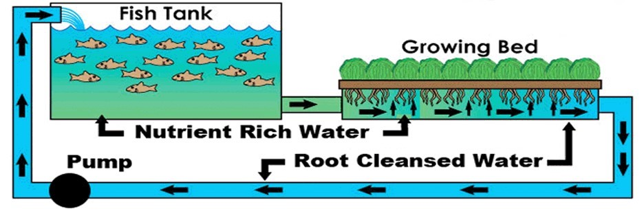

ECONOMY

Activities of the society which concerns the production, distribution, exchange, and consumption of goods and services, in their interdependence, forms the economy. Fibonacci's economic strength is concentrated primarily on the production of goods by small and enterprises in industries such jewelry industry, extraction of ferrous and non-ferrous ores, constructions, food and fish industry and hospitality industry. This will justify many and cover the costs of the ship and coming of great help in the economy. Also two other strengths of our station besides the mining industry are agriculture and tourism which promise a continuing growth and which have also been detailed above. We were able to take advantage of the benefits that the settlement brings us and supporting these branches is necessary and sufficient for a head start.

Agriculture
Agriculture
Agriculture plays a key role when it comes to supporting life and this has been shown throughout human history on Earth. Not only does agriculture provide us with the food needed, but it also brings us oxygen and valuable resources.
Sometimes all it takes are a few tomatoes in order to lift your spirits as a reminder of the fresh and delicious taste back home. Agriculture products have specific flavor, odor, color- all these are much more important than it seems on a psychological level. Those qualities bring variety and pleasure in one’s diet, aspects that should not be neglected in a future space settlement.Also vertical farming.